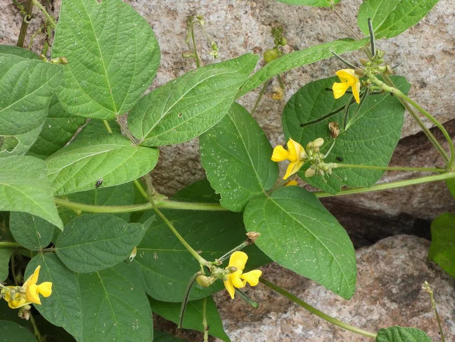

农作物与经济植物 · 植物界
饭豆 Vigna umbellata

豆科豇豆属一年生草本，荚果细长、籽粒可煮食，耐旱耐瘠，是中国南方与东南亚重要的传统食用豆类。
- 分类
- 门被子植物门纲木兰纲目豆目科豆科属豇豆属
- 栖息环境
- 热带与亚热带的山坡、旱地与间作田，耐旱耐瘠薄
- 地理分布
- 中国南方及南亚、东南亚；广东、广西、云南、贵州、福建常见
- 保护级别
- IUCN 暂无评估；栽培广泛，地方品种资源需保护
物种志
饭豆为一年生草本，高 30–100 厘米，茎直立或半蔓生，被短柔毛。叶为三出复叶，小叶卵形至披针形，长 5–10 厘米。总状花序腋生，花黄色，龙骨瓣弯曲；荚果细长、圆柱形，长 6–10 厘米，成熟时黄褐色，内含 6–10 粒种子，种子长圆形，红色、黄色或黑色。
饭豆原产南亚与东南亚，在中国南方栽培历史悠久，分布于广东、广西、云南、贵州、福建等地，耐旱、耐瘠薄、生育期短。它的籽粒富含蛋白质与淀粉，可煮粥、做豆沙或与米饭同煮，是南方山区重要的杂粮；茎叶可作饲料，也可作绿肥。饭豆在东南亚常与玉米、木薯间作，是热带地区重要的固氮作物。
形态与习性
- 株高30–100 厘米，茎直立或半蔓生
- 花期7–8 月，花黄色
- 果期9–10 月，荚果细长
- 光照喜光，短日照作物
- 水分耐旱，忌积水
- 土壤不择土壤，以疏松的沙质壤土为佳
- 主要用途食用豆类、饲料与绿肥
趣味知识
- 饭豆的荚果细长，一个荚里可装 6–10 粒种子，籽粒有红、黄、黑等颜色。
- 它原产南亚与东南亚，在中国南方常与玉米间作。
- 饭豆耐旱耐瘠，是山区重要的救荒作物与固氮绿肥。
- 它的种子可与米饭同煮，也可做豆沙，是南方杂粮中的常见成员。